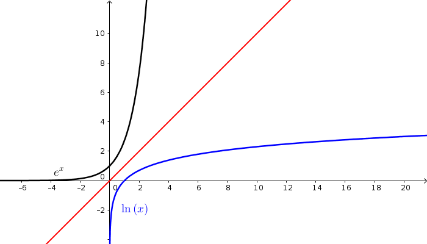
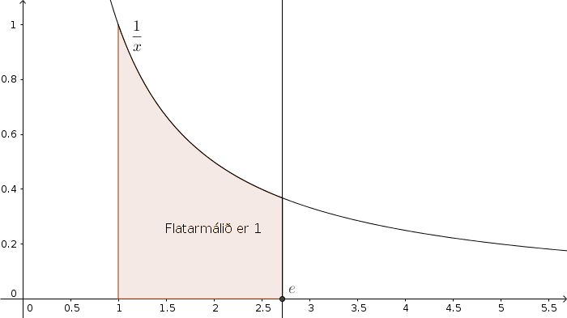
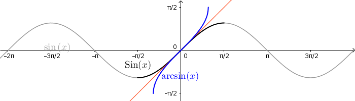
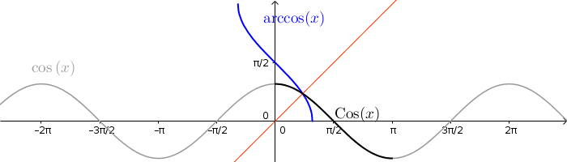
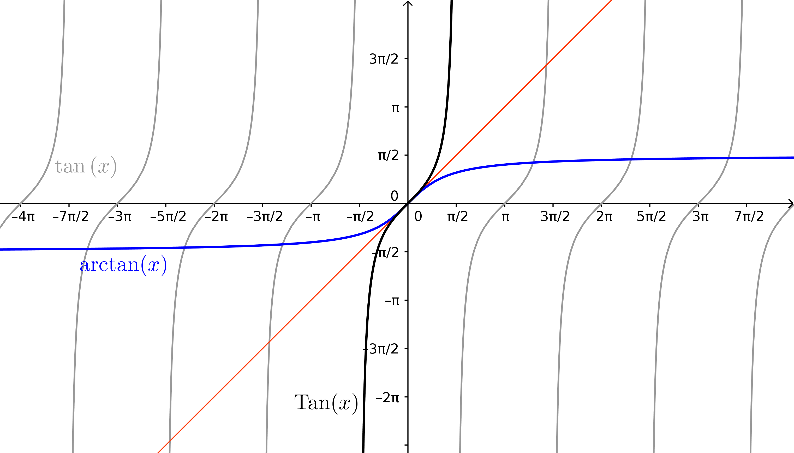
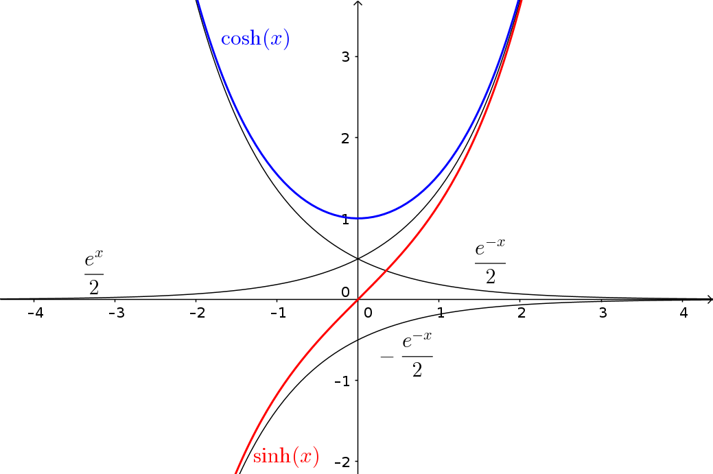
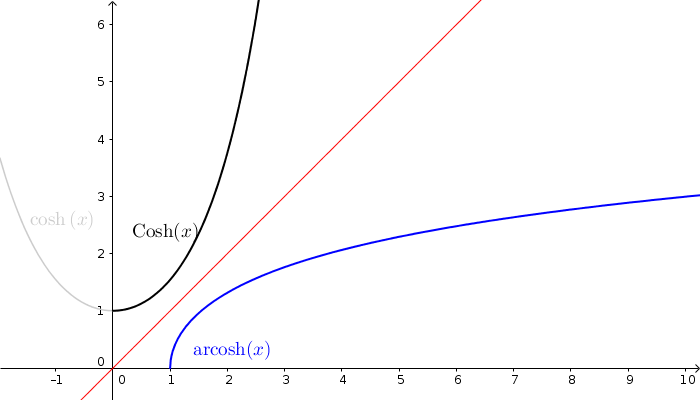
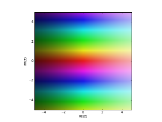

4. Torræð föll
Athugasemd
Nauðsynleg undirstaða
Andhverfur falla. Sjá einnig undirstöðuatriði um andhverfur.
Sjá einnig undirstöðuatriði um logra.
Sjá einnig undirstöðuatriði um náttúrulega veldisvísisfallið og náttúrulega logrann.
We are stuck with technology when what we really want is just stuff that works.
- Douglas Adams, The Salmon of Doubt
4.1. Náttúrlegi logrinn
4.1.1. Skilgreining: Náttúrlegi logrinn
Skilgreining
Látum \(A_{x_0}\) tákna flatarmál svæðisins sem afmarkast af
\(x\)-ás, grafinu \(y=\frac{1}{x}\) og línunum \(x=1\) og
\(x=x_0\). Þá skilgreinum við
náttúrlega logrann
en: natural logarithm
Smelltu fyrir ítarlegri þýðingu.
Aðvörun
Fallið \(\ln\) er bara skilgreint fyrir jákvæðar rauntölur
4.1.2. Setning
Setning
Náttúrlegi logrinn er diffranlegur og afleiðan uppfyllir
Af þessu fylgir að logrinn er samfellt fall.
4.1.3. Setning
Setning
Fyrir allar tölur \(x,y>0\) gildir að:
\(\ln(1) = 0\)
\(\ln(xy)=\ln x+\ln y\)
\(\ln(1/x)=-\ln x\)
\(\ln(x/y)=\ln x-\ln y\)
\(\ln (x^r)=r\ln x\), fyrir \(r \in \mathbb Q\).
4.2. Veldisvísisfallið
4.2.1. Setning
Setning
Fallið \(\ln x\) er strangt vaxandi og þar með eintækt.
4.2.2. Skilgreining: Veldisvísisfallið
Skilgreining
Veldisvísisfallið
en: exponential function
Smelltu fyrir ítarlegri þýðingu.
{kind=link}

4.2.3. Skilgreining: Talan \(e\)
Skilgreining
Skilgreinum töluna með \(e=\exp 1\).
Það þýðir að \(\ln(e)=1\), og talan \(e\) ákvarðast þess vegna af því að flatarmál svæðisins milli \(x\)-ás og grafs \(\frac 1x\) á bilinu \([1,e]\) sé 1.
{kind=link}

Athugasemd
Hver er munurinn á \(e^x\) og \(\exp(x)\) ?
\(e^x\) er aðeins skilgreint þegar \(x\) er ræð tala, en \(\exp(x)\) er skilgreint fyrir allar rauntölur því logrinn, \(\ln:(0,\infty)\to {{\mathbb R}}\), er átækur.
Það er hins vegar hægt að sýna að
Því er eðlilegt að rita fyrir rauntölu \(x\), hvort sem hún er ræð eða óræð, að \(e^x=\exp x\). Þannig að héðan í frá gerum við engan greinarmun á \(e^x\) og \(\exp x\), við notum bara það sem lítur betur út fagurfræðilega.
Athugasemd
Athugið að
4.2.4. Eiginleikar veldisvísisfallsins
Út frá eiginleikum lograns fáum við svo eftirfarandi
\(e^0=1\),
\(e^{x+y}=e^x e^y\),
\(e^{-x}=\frac{1}{e^x}\),
\(e^{x-y}=\frac{e^x}{e^y}\),
\(\left(e^x\right)^y=e^{xy}\), fyrir \(y \in \mathbb Q\).
Athugasemd
Hænan eða eggið? Hér höfum við nálgast \(\ln\) og \(\exp\) þannig að við byrjum á að skilgreina \(\ln\) með heildi (flatarmáli) og finnum svo andhverfu lograns, \(\exp\).
Einnig væri mögulegt að byrja á því að sýna að \(e^x\) sé vel skilgreint, ekki bara fyrir ræð \(x\) heldur einnig óræð. Það myndum við gera með því að nota markgildið \(\exp(x)=\lim_{r\to x, r\text{ ræð tala}} e^r\) hér að ofan, og taka þá \(e^x\) sem skilgreiningu á \(\exp x\) og finna svo andhverfuna, \(\ln\).
Báðar þessar aðferðir hafa kosti og galla, en við notum þá fyrri vegna þess að hún gefur myndræna framsetningu á logranum.
4.3. Önnur veldisvísisföll og lograr
4.3.1. Skilgreining
Skilgreining
Fyrir tölu \(a>0\) og rauntölu \(x\) skilgreinum við
4.3.2. Skilgreining
Skilgreining
Andhverfa fallsins \(a^x\) er kölluð logri með grunntölu \(a\) og táknuð með \(\log_a x\). Fallið \(\log_a x\) er skilgreint fyrir öll \(x>0\).
4.3.3. Athugasemd
Athugasemd
4.3.4. Reiknireglur
Setning
Fyrir rauntölu \(a>0\) og allar rauntölur \(x,y\) gildir að:
\(a^0=1\)
\(a^1=a\)
\(a^{x+y}=a^xa^y\)
\(a^{-x}=\frac{1}{a^x}\)
\(a^{x-y}=\frac{a^x}{a^y}\)
\(\big(a^x\big)^y=a^{xy}\)
\((ab)^x=a^xb^x\) (hér er forsenda að \(b>0\)).
Setning
Fyrir rauntölu \(a>0\) og allar rauntölur \(x,y\) gildir að:
\(\log_a 1=0\)
\(\log_a a = 1\)
\(\log_a(xy)=\log_a x+\log_a y\)
\(\log_a (1/x)=-\log_a x\)
\(\log_a (x/y)=\log_a x-\log_a y\)
\(\log_a (x^y)=y\log_a x\)
\(\log_a x=\frac{\log_b x}{\log_b a}\) (hér er forsenda að \(b>0\)).
4.4. Eiginleikar veldisvísisfalla og logra
4.4.1. Setning
Setning
\(\frac{d}{dx}\ln x=\frac 1x\)
\(\frac{d}{dx}e^x=e^x\)
\(\frac{d}{dx}a^x=(\ln a)a^x\)
\(\frac{d}{dx}\log_a x=\frac{1}{(\ln a)x}\)
4.4.2. Setning
Setning
Ef \(a>0\) þá er
\(\lim_{x\to \infty} \frac{x^a}{e^x} = 0\)
\(\lim_{x\to \infty} \frac{\ln(x)}{x^a} = 0\)
\(\lim_{x\to -\infty} |x|^a e^x = 0\)
\(\lim_{x\to 0^+} x^a\, \ln(x) = 0\)
Athugasemd
Athugið að setningin að ofan gildir óháð því hversu stórt \(a\) er (liðir 1 og 3) eða hversu lítið \(a\) er (liðir 2 og 4).
Með öðrum orðum:
Veldisvísisföll vaxa hraðar en allar margliður.
Lograr vaxa hægar en allar margliður.
4.4.3. Æfingadæmi
4.5. Andhverfur hornafalla
4.5.1. Andhverfa sínus
Fallið \(\sin(x)\) skilgreint á öllum rauntalnaásnum er ekki eintækt og á sér því ekki andhverfu.
Við getum hins vegar takmarkað okkur við hálfa lotu, þ.e. skoðum bara \(x\in [-\frac \pi 2, \frac \pi 2]\). \(\sin(x)\) takmarkað við þetta bil táknum við með \({{\text{Sin}}}(x)\). \({{\text{Sin}}}\) er strangt vaxandi og því eintækt á þessu bili, og hefur þar af leiðandi andhverfu.
4.5.2. Skilgreining: arcsin
Skilgreining
Andhverfa sínussins, táknuð \(\arcsin(x)\) (eða \(\sin^{-1}(x)\)), er andhverfa \({{\text{Sin}}}\) og hefur því myndmengið \([-\frac \pi 2, \frac \pi 2]\) og skilgreiningarmengið \([-1,1]\).
{kind=link}

4.5.3. Andhverfa kósínus
Fallið \(\cos(x)\) skilgreint á öllum rauntalnaásnum er ekki eintækt og á sér því ekki andhverfu.
Við getum hins vegar takmarkað okkur við hálfa lotu, þ.e. skoðum bara \(x\in [0, \pi]\). \(\cos(x)\) takmarkað við þetta bil táknum við með \({{\text{Cos}}}(x)\). \({{\text{Cos}}}\) er strangt minnkandi og því eintækt á þessu bili, og hefur þar af leiðandi andhverfu.
4.5.4. Skilgreining: arccos
Skilgreining
Andhverfa kósínussins, táknuð \(\arccos(x)\) (eða \(\cos^{-1}(x)\)), er andhverfa \({{\text{Cos}}}\) og hefur því myndmengið \([0,\pi]\) og skilgreiningarmengið \([-1,1]\).
{kind=link}

4.5.5. Andhverfa tangens
Fallið \(\tan(x) = \frac{\sin(x)}{\cos(x)}\) skilgreint á \(\{x \in {{\mathbb R}}; x \neq \pi k + \frac \pi 2, k \in {{\mathbb Z}}\}\) er ekki eintækt og á sér því ekki andhverfu.
Við getum hins vegar takmarkað okkur við eina lotu, þ.e. skoðum bara \(x\in (-\frac \pi 2, \frac \pi 2)\). Athugið að hér eru endapunktar bilsins ekki með. \(\tan(x)\) takmarkað við þetta bil táknum við með \({{\text{Tan}}}(x)\). \({{\text{Tan}}}\) er strangt vaxandi og því eintækt á þessu bili, og hefur þar af leiðandi andhverfu.
4.5.6. Skilgreining: arctan
Skilgreining
Andhverfa tangensins, táknuð \(\arctan(x)\) (eða \(\tan^{-1}(x)\)), er andhverfa \({{\text{Tan}}}\) og hefur því myndmengið \((-\frac \pi 2, \frac \pi 2)\) og skilgreiningarmengið \((-\infty,\infty)\). Þar að auki þá er \(\lim_{x\to \infty} \arctan(x) = \frac \pi 2\) og \(\lim_{x\to -\infty} \arctan(x) = -\frac \pi 2\).
{kind=link}

4.5.7. Setning
Setning
\(\frac d{dx} \arcsin(x) = \frac 1{\sqrt{1-x^2}}\)
\(\frac d{dx} \arccos(x) = \frac {-1}{\sqrt{1-x^2}}\)
\(\frac d{dx} \arctan(x) = \frac 1{1+x^2}\)
4.6. Breiðbogaföll
4.6.1. Skilgreining: cosh og sinh
Skilgreining
Við skilgreinum
breiðbogasínus
en: hyperbolic sine
Smelltu fyrir ítarlegri þýðingu.
Smelltu fyrir ítarlegri þýðingu.
{kind=link}

4.6.2. Setning
Setning
\(\frac d{dx} \sinh(x) = \cosh(x)\)
\(\frac d{dx} \cosh(x) = \sinh(x)\)
Aðvörun
Það er enginn mínus í afleiðu \(\cosh\) eins og í afleiðu \(\cos\).
4.6.3. Setning
Setning
\(\sinh(0) = 0\) og \(\cosh(0) = 1\)
\(\cosh^2(x) - \sinh^2(x) = 1\)
\(\sinh(-x) = -\sinh(x)\)
\(\cosh(-x) = \cosh(x)\)
\(\sinh(x+y) = \sinh(x)\cosh(y) + \cosh(x)\sinh(y)\)
\(\cosh(x+y) = \cosh(x)\cosh(y) + \sinh(x)\sinh(y)\)
\(\cosh(2x) = \cosh^2(x) + \sinh^2(x) = 1+2\sinh^2(x) = 2\cosh^2(x)-1\)
\(\sinh(2x) = 2\sinh(x)\cosh(x)\)
4.6.4. Skilgreining: tanh
Skilgreining
Við skilgreinum
breiðbogatangens
en: hyperbolic tangent
Smelltu fyrir ítarlegri þýðingu.
4.6.5. Setning
Setning
\(\tanh(x) = \frac{e^x-e^{-x}}{e^x+e^{-x}}\)
\(\frac d{dx} \tanh(x) = \frac{1}{\cosh^2(x)}\)
\(\lim_{x\to \infty} \tanh(x) = 1\)
\(\lim_{x\to -\infty} \tanh(x) = -1\)
4.7. Andhverfur breiðbogafalla
4.7.1. Andhverfa breiðbogasínussins og breiðbogatangensins
Af Setningum 4.6.2 (1) og 4.6.5 (2) sjáum við að afleiður \(\sinh\) og \(\tanh\) eru jákvæðar og föllin því stranglega vaxandi. Þau eru þar með eintæk og eiga sér andhverfur.
4.7.2. Skilgreining
Skilgreining
Andhverfa breiðbogasínussins
en: area-hyperbolic sine, inverse hyperbolic sine
Smelltu fyrir ítarlegri þýðingu.
Andhverfa breiðbogatangensins
en: inverse hyperbolic tangent
Smelltu fyrir ítarlegri þýðingu.
4.7.3. Andhverfa breiðbogakósínussins
Þar sem \(\cosh\) er ekki eintækt fall þá verðum við að beita svipuðum aðferðum eins og þegar við fundum \(\arcsin\) til þess að finna andhverfu þess. Það er, við þurfum að takmarka skilgreiningarmengi þess.
Táknum \(\cosh(x)\) takmarkað við bilið \([0,\infty)\) með \({{\text{Cosh}}}(x)\). Fallið \({{\text{Cosh}}}\) er strangt vaxandi og því eintækt á þessu bili, og á sér þar með andhverfu.
4.7.4. Skilgreining
Skilgreining
Andhverfa breiðbogakósínussins
en: inverse hyperbolic cosine
Smelltu fyrir ítarlegri þýðingu.
{kind=link}

4.7.5. Í framtíðinni
Við höfum séð að veldisvísisfallið og logrinn tengjast breiðbogaföllunum töluvert og það sama á við um hornaföllin. Seinna, nánar tiltekið í Stærðfræðigreiningu III, þá sjáið þið að hornaföllin og breiðbogaföllin eru bara mismunandi hliðar á veldisvísisfallinu.
{kind=link}
